Delapan keadaan layar, masing-masing tampil di layar lebar dan layar HP. Lihat semuanya, lalu jawab di bawah.
Ini tampilan utama: daftar slip gaji yang sedang ditahan dan menunggu dilepas.
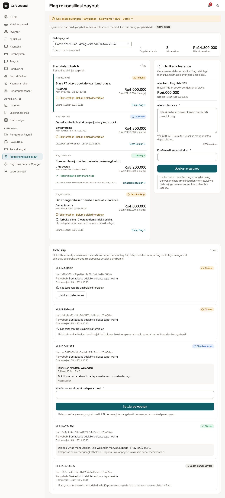
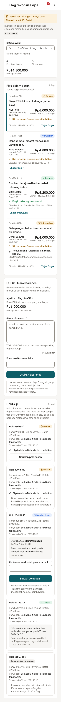
Orang kedua memeriksa slip yang diusulkan lalu menyetujui supaya slip bisa dilepas.
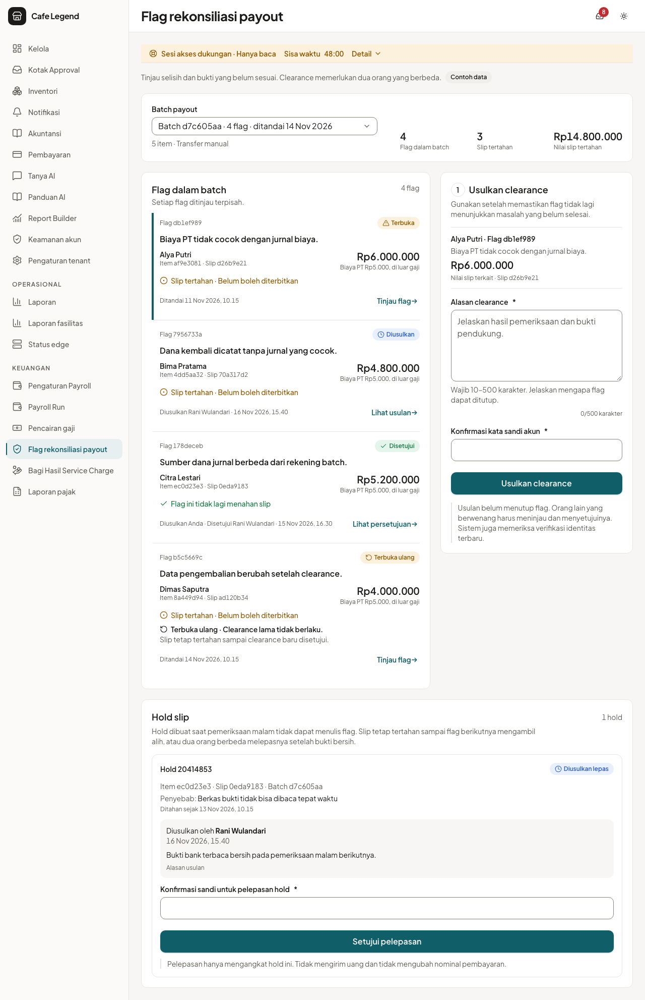
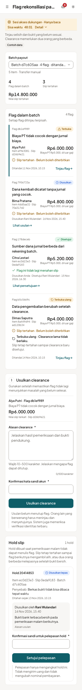
Orang yang mengusulkan pelepasan tidak bisa menyetujuinya sendiri, jadi tombol setuju dikunci.
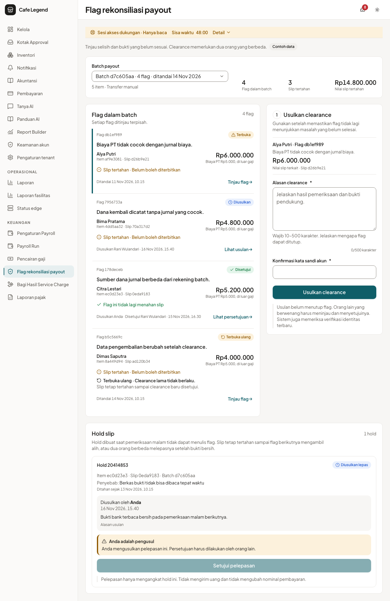
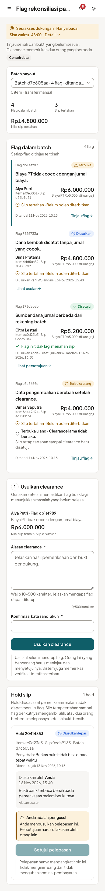
Slip ini sudah ditangani orang lain lebih dulu, jadi layar memberi tahu dan tidak mengulang proses.
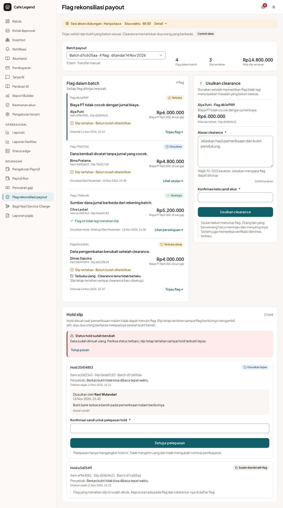
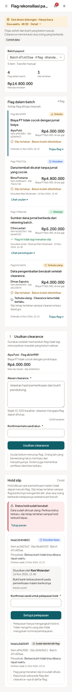
Pelepasan tidak bisa dilanjutkan sebelum catatan alasan diisi; layar menunjukkan bagian yang kurang.
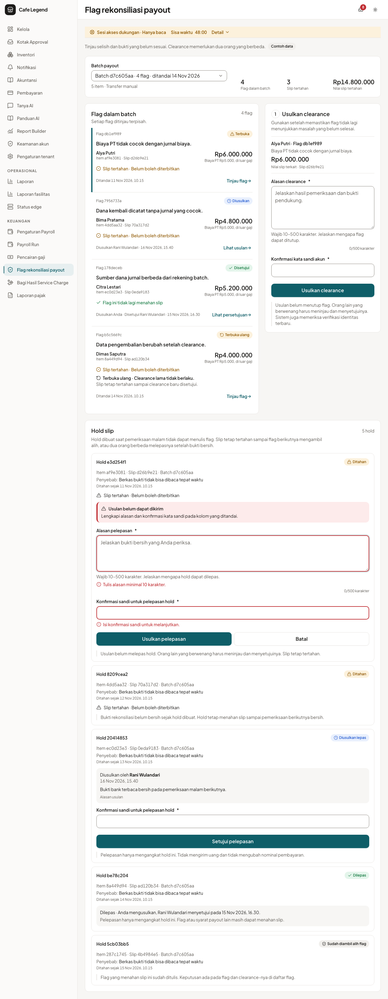
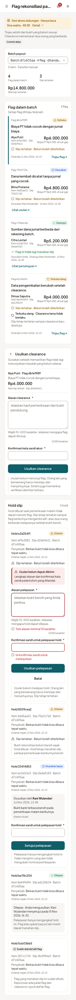
Daftar slip tidak berhasil dimuat; layar menjelaskan masalahnya dan menawarkan coba lagi.
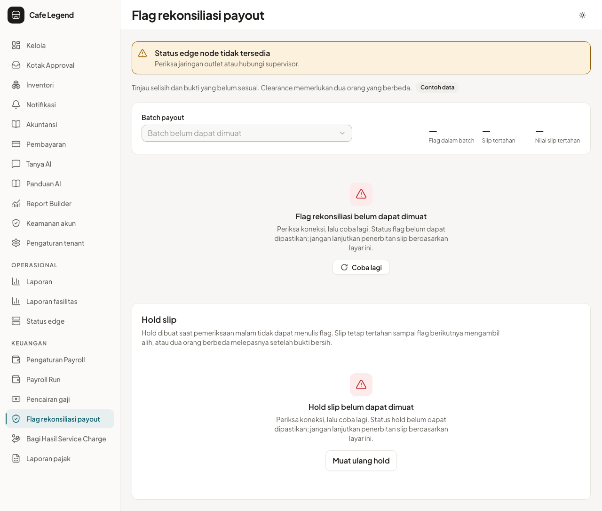
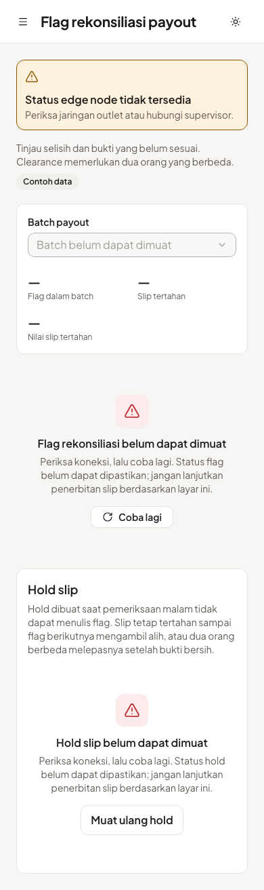
Layar sedang mengambil daftar slip, jadi yang tampil adalah kerangka sementara.
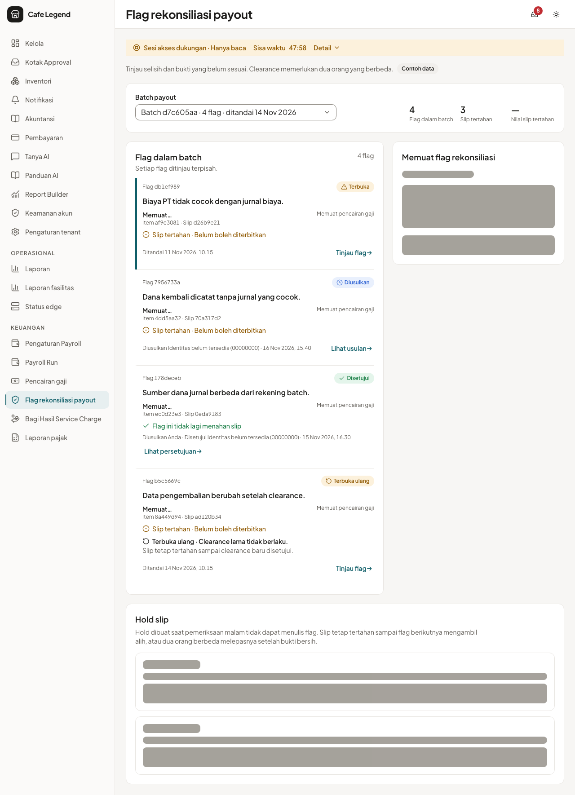
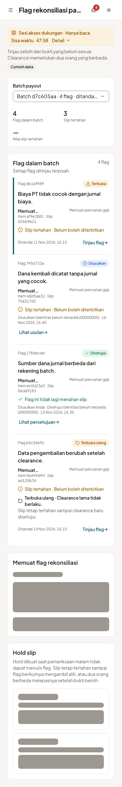
Semua slip sudah lancar, tidak ada yang sedang ditahan.
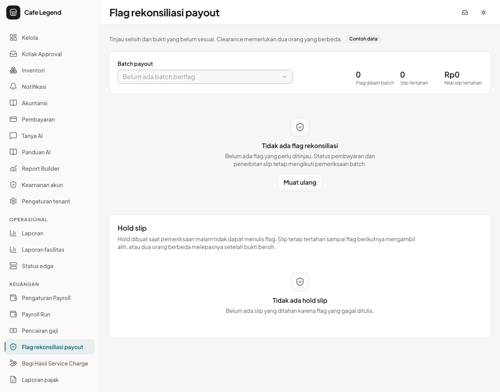
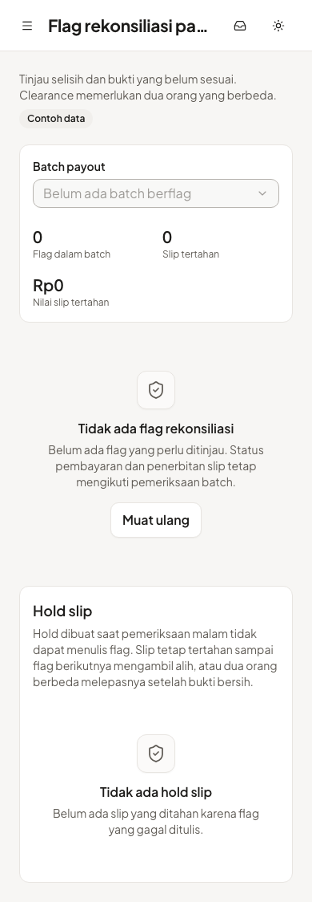